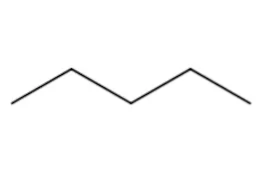
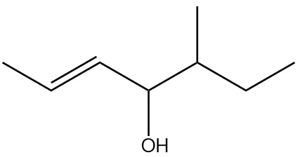
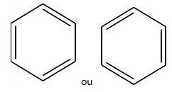
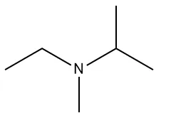

O que é? A Química Orgânica é o ramo da Química que estuda os compostos que contêm carbono, chamados de compostos orgânicos.
Ex.: CO₂ (dióxido de carbono), HCN (ácido cianídrico), carbonatos (Na₂CO₃, CaCO₃) são inorgânicos.
Exemplos de orgânicos: plásticos, medicamentos, vitaminas, combustíveis, proteínas, DNA, açúcares, gorduras.
Friedrich Wöhler sintetizou ureia (composto orgânico) a partir de cianato de amônio (inorgânico).
Isso provou que compostos orgânicos podem ser feitos em laboratório, sem "força vital".
Histórico da Química Orgânica:
- Antes de Cristo: Sabão de cinzas, álcool por fermentação, corantes naturais.
- 1780: Bergman distingue compostos inorgânicos e orgânicos.
- 1807: Berzelius cria a expressão "Química Orgânica".
- 1828: Wöhler sintetiza ureia → fim da Teoria da Força Vital.
- 1857-58: Kekulé e Couper: carbono faz 4 ligações e forma cadeias.
- 1865: Kekulé propõe estrutura cíclica do benzeno (inspirado em sonho com uma cobra).
- 1874: van't Hoff e Le Bel: geometria tetraédrica do carbono.
- 1953: Watson e Crick elucidam estrutura do DNA.

DNA · exemplo de composto orgânico complexo
Molécula que contém carbono, hidrogênio, oxigênio, nitrogênio e fósforo
Aplicações Fármacos, polímeros, agroquímicos, cosméticos, combustíveis, alimentos, tecidos.
Para descrever a maneira como os átomos estão unidos formando a cadeia carbônica, os químicos estabeleceram uma linguagem apropriada baseada em 4 critérios de classificação.
1. Cadeia Aberta ou Fechada
Os carbonos não formam um ciclo. Possui extremidades.
Os carbonos formam um ciclo (anel).

2. Cadeia Homogênea ou Heterogênea
Não possui heteroátomo (O, S, N, P) entre carbonos.
Possui heteroátomo (O, S, N, P) entre carbonos.
3. Cadeia Saturada ou Insaturada
Possui apenas ligações simples (—) entre carbonos.
Possui pelo menos uma ligação dupla (=) ou tripla (≡).
4. Cadeia Aberta: Normal ou Ramificada
Os átomos de carbono não formam anel (ciclo), ou seja, as extremidades são "livres".Todos os carbonos estão em linha reta (sequência única).

Possui carbonos fora da cadeia principal.

5. Cadeia Fechada: Aromática ou Alicíclica
Possui anel benzênico (com ressonância).

Ciclo sem anel benzênico.

Resumo da Classificação das Cadeias Carbônicas
| Critério | Classificação | Característica |
|---|---|---|
| 1. Abertura | Aberta (acíclica/alifática) | Não forma ciclo, possui extremidades |
| Fechada (cíclica) | Forma um ciclo (anel) | |
| 2. Composição | Homogênea | Sem heteroátomo entre carbonos |
| Heterogênea | Com heteroátomo (O, S, N, P) entre carbonos | |
| 3. Ligações | Saturada | Apenas ligações simples (—) |
| Insaturada | Com dupla (=) ou tripla (≡) | |
| 4. Ramificação (aberta) |
Normal | Não ramificada (em linha reta) |
| Ramificada | Com carbonos fora da cadeia principal | |
| 5. Tipo de ciclo (fechada) |
Aromática | Com anel benzênico (ressonância) |
| Alicíclica | Sem anel benzênico | |
| 6. Mista | Mista | Parte cíclica + carbono(s) fora do ciclo |
- Cadeia principal: Possui 7 carbonos (prefixo hept), englobando a ligação dupla e o grupo álcool.
- Numeração: Começa da esquerda para a direita para dar o menor número possível à insaturação (posição 2 em vez de 5), já que o grupo funcional (—OH) fica na posição 4 de ambos os lados.
- Insaturação: Ligação dupla no carbono 2 (-2-en).
- Grupo funcional: Álcool no carbono 4 (-4-ol).
- Ramificação: Grupo metil no carbono 5 (5-metil).
C1: Extremidade esquerda C2 e C3: Carbonos da ligação dupla C4: Vértice com a hidroxila (—OH) para baixo C5: Vértice com o metil (—CH₃) para cima C6: Vértice seguinte descendo C7: Extremidade direita